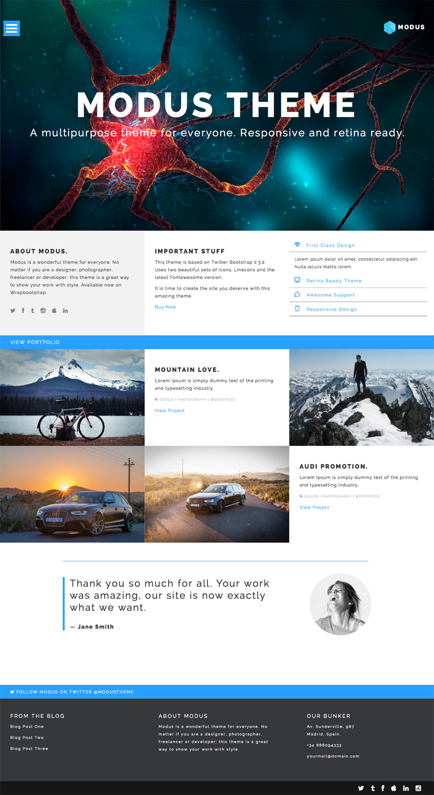
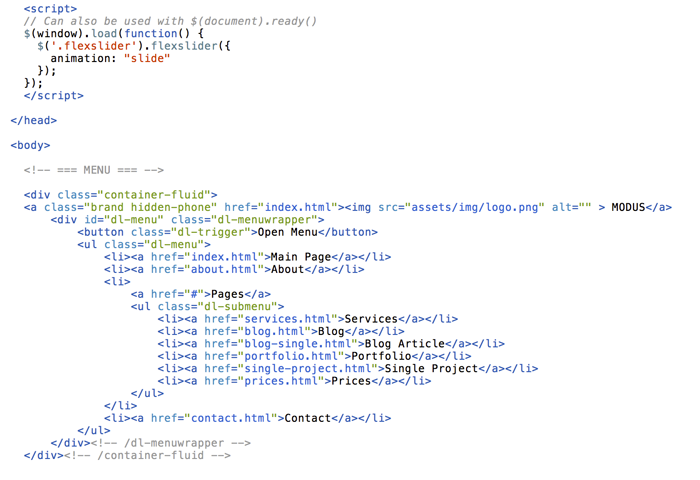
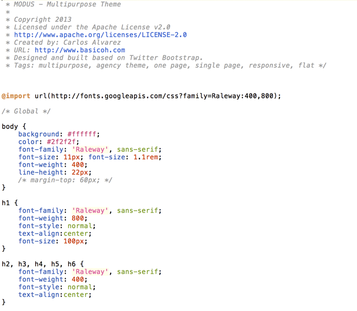
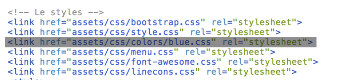
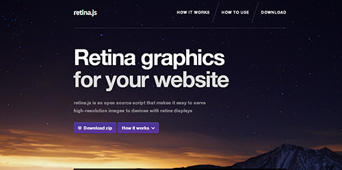
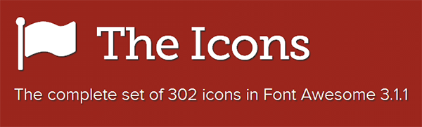
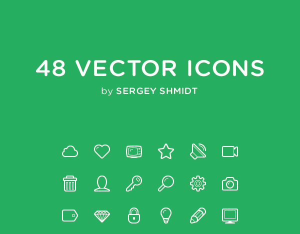

“MODUS - Multipurpose Theme” Documentation by “Basicoh” v1.0
Created: 06/29/2013
By: Basicoh.com
Email: hola@basicoh.com
Thank you for purchasing my theme. I am very glad that you like it. If you have any questions that are beyond the scope of this help file, please feel free to contact me. Thanks!
Table of Contents
- HTML Structure
- CSS Files and Structure
- Theme Configurations
- JavaScript
- PSD Files
- Sources and Credits

A) HTML Structure - top
This is a quick guide to use and understand the theme. The template is really simple to modify so I am sure you won't have any problems. If you have questions, please feel free to contact me.
The theme is a Retina Ready responsive layout. Was designed using Twitter Bootstrap 2.3.2. Was tested in the major browsers and some devices like iPhone 4s & iPad Retina.
All files on the theme are commented and are really easy to configure. Take a look to the HTML structure:

This theme comes with 9 htmls. The idea is that you can make some changes and launch your site as soon as possible. As I said before, is really easy to modify the theme.
HTML List
B) CSS Files and Structure - top
The theme uses 8 global CSS files. Another css file is added by Google Fonts when the page loads.
This theme was created using Twitter Bootstrap 2.3.2 version. I tried to keep all major configurations by default. The style.css file adds the main configuration and some tweaks in the navigation bar and in the Media Queries.
Please note, the theme works fine on Internet Explorer but wasn't tasted in depth. If you find some problems, please contact me via email and I will try to help you.
CSS List
C) Theme Configuration - top
GOOGLE FONTS
MODUS uses one predefined Google Font, "Lato". If you want to change this value, you have to replace all the references in the style.css file.
In Google Fonts website you can find the code to paste in the theme. Choose the desired font, click in the "Quick Use" link and copy & paste the code.

THEME COLOR
The theme uses an exclusive CSS to configure the main color. Pre-defined with this theme comes 4 CSS files with different color configurations.
To use a CSS color file, just refer the color name in the style.css file as shown below
RETINA READY
This theme was created with support to retina devices. Retina.js script is used to enhance the experience of retina display's users.
The JavaScript script automatically replaces images on your page with high-resolution variants (if they exist. Steps to use it:
script type="text/javascript" src="/scripts/retina.js" /script(put it at the bottom of your template, before your closing /body tag)
If you need more information, please visit Retina.js Site
FONTAWESOME
This theme uses FontAwesome as a support font. You can use the font adding the tag "li_" in your design. Please refer to the index.html to see a complete example. See the list of total icons in the official site: FontAwesome Site
Linecons
Linecons Free is a set of remarkable free vector icons. The set contains 48 fully scalable vector icons with outline styles.
You can use the icons using the tag "i icon-NAME". Please refer to the index.html file to see a full example.
Please, check the official site of linecons: Designmodo.
D) JavaScripts - top
List of Javascript files.
- jQuery Framework
- bootstrap.js (Default bootstrap javascript)
- retina.js (Retina script)
- toucheffects.js (Touch configurations)
- jquery.dlmenu.js (Menu Script)
- jquery.cbpQTRotator.js (Testimonial Rotator Script)
- jquery.flexslider.js (Flex Slider Script)
E) PSD Files - top
Please note: This theme NOT includes a full layered PSD.
The theme comes with the demo images, so you can easily modify them with your content.
F) Sources and Credits - top
IMAGE SOURCES
Once again, thank you so much for purchasing this theme. As I said at the beginning, I'd be glad to help you if you have any questions relating to this theme.
Basicoh.com